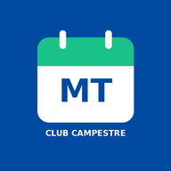

Necesitas conexión
Conéctate a internet para consultar tu horario actualizado y las respuestas de Bienestar.
No mostramos horarios antiguos ni guardamos soportes médicos sin conexión.
Volver a intentar
Conéctate a internet para consultar tu horario actualizado y las respuestas de Bienestar.
No mostramos horarios antiguos ni guardamos soportes médicos sin conexión.
Volver a intentar